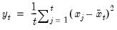

@cumvar Cumulative Statistics Cumulative variances (population – non-d.f. adjusted) of a series. Equivalent to @cumvarp. Increasing samples calculation of the population (non-d.f. adjusted) Pearson product moment variance. Syntax: @cumvar(x, [s]) x: series s: (optional) sample string or object Return: series The population variance for each observation is calculated as  where is the mean of over the first observations. This function is panel aware. Examples series x = @nrnd group g @cumvar(x) @cumvars(x) @cumvarp(x) g.line plots @cumvar(x), @cumvars(x), and @cumvarp(x) together. Note that @cumvar(x) and @cumvarp(x) are equivalent. All three series converge in probability to 1. Cross-references See also @cumstdev, @cumstdevs, @cumstdevp, @cumvars, and @cumvarp. For the backward variant of this function, see @cumbvar.


 is calculated as
is calculated as is the mean of
is the mean of  over the first
over the first  observations.
observations.